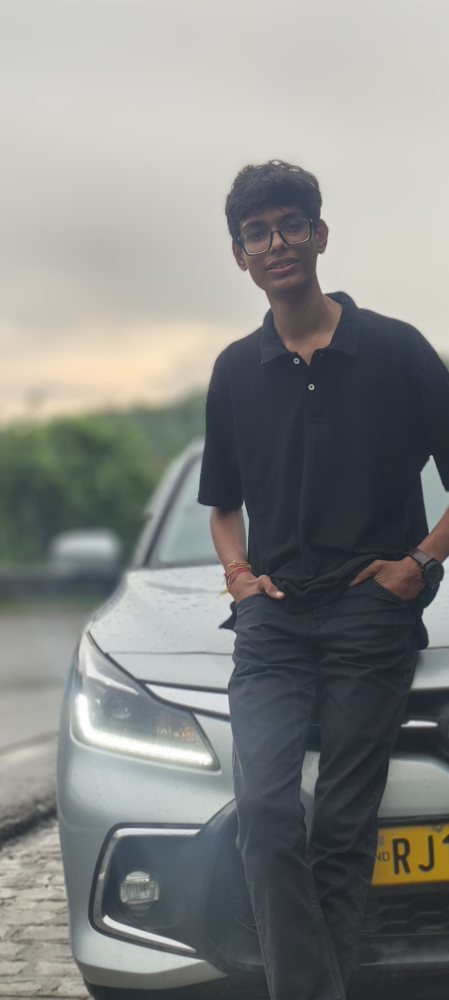

Chapter I: The Spark
After completing my 12th Science, I felt a pull toward building something of my own.
Not just a job. A vision.
Chapter II: The First Hustle
Home Tuitions
My first hustle — teaching students from Std 1 to 5. It wasn’t big, but it taught me discipline, responsibility, and survival.
Teaching Kids
Managing diverse young minds. Patience became my greatest asset during these early years.
Financial Crisis
Navigating the lean times hardened my resolve to build a system that supports others in their darkest hours.
Chapter III: The Turning Point
After getting selected for the NDA, I realized —
I must build something that is truly mine.
Chapter IV: The Meeting
Rudradutt

Lucky
I found a business partner with the same vision — Lucky. Together, we identified a gap: startups struggling, but no real support system.